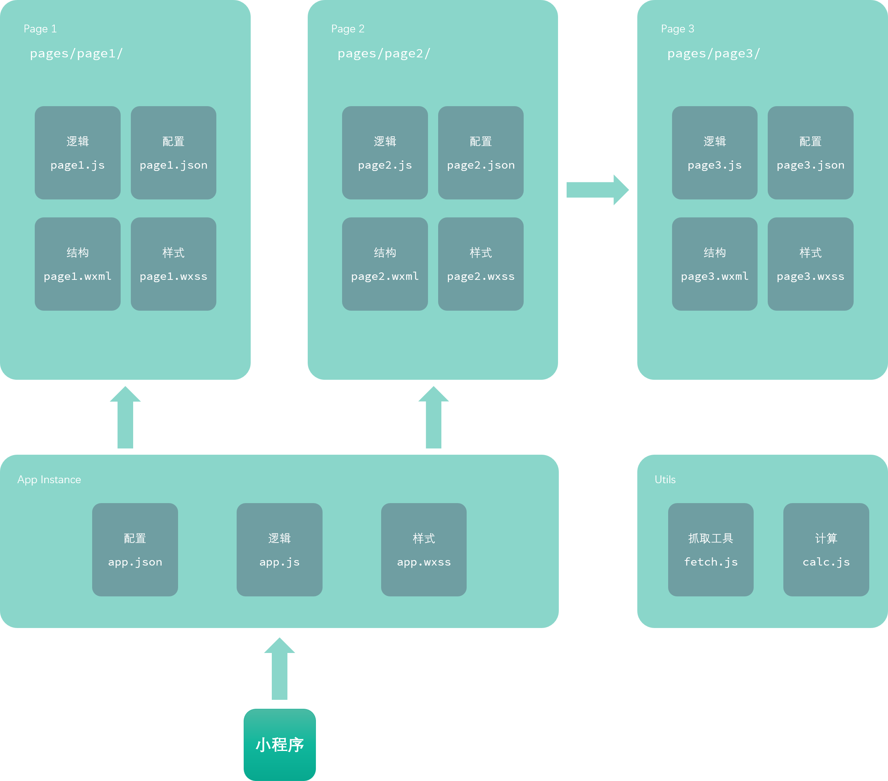
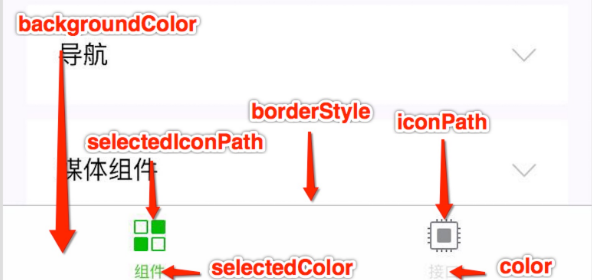

微信小程序账号与工具
在线文档：https://mp.weixin.qq.com/debug/wxadoc/dev/
小程序开发者账号注册
微信公众平台：https://mp.weixin.qq.com/
小程序开发者账号注册：https://mp.weixin.qq.com/wxopen/waregister?action=step1
微信开发者工具
微信开发者工具：https://mp.weixin.qq.com/debug/wxadoc/dev/devtools/download.html
小程序在线Demo二维码
体验小程序官方源码：https://mp.weixin.qq.com/debug/wxadoc/dev/demo/demo.zip

微信小程序文件结构
主体文件结构
主体部分由三个文件组成，必须放在项目的根目录，如下：
页面文件结构
页面由四个文件组成，分别是：
| 文件类型 | 必填 | 作用 |
|---|---|---|
| js | 是 | 页面逻辑 ( 微信小程序没有window和document对象 ) |
| wxml | 是 | 页面结构 ( XML语法，不是HTML语法 ) |
| wxss | 否 | 页面样式表 ( 拓展了rpx尺寸单位，微信专属响应式像素 ) |
| json | 否 | 页面配置 ( 不能写注释，否则编译报错 ) |

WXML 结构_基础 (标签、组件)
组件文档：https://mp.weixin.qq.com/debug/wxadoc/dev/component/
常用布局标签(组件)
xxxxxxxxxx<view></view> 相当于 <div></div><text></text> 相当于 <span></span><image></image> 相当于 <img /><navigator></navigator> 相当于 <a></a><block></block> 区块标签，不会渲染到页面注意：image组件默认宽度300px、高度225px，很多时候我们都不需要这个默认宽高，记得手动设置宽高
常用表单标签(组件)
xxxxxxxxxx<button></button><input type="text" /> <checkbox /><radio/>轮播图组件
xxxxxxxxxx<swiper indicator-dots="是否显示面板指示点" autoplay="是否自动切换" interval="自动切换时间间隔" duration="滑动动画时长"> <swiper-item> <image src="图片路径1" width="375" height="150"/> </swiper-item> <swiper-item> <image src="图片路径2" width="375" height="150"/> </swiper-item></swiper>探索：实现无缝轮播怎么办？
WXSS 样式
WXSS (WeiXin Style Sheets) 是一套样式语言。
WXSS文档： https://mp.weixin.qq.com/debug/wxadoc/dev/framework/view/wxss.html
WXSS 新增特性
与 CSS 相比，WXSS 扩展以下2个特性：
- 尺寸单位 rpx ( responsive pixel 响应式像素)
- 样式导入 @import "样式表路径";
尺寸单位
- rpx ( responsive pixel 响应式像素) : 可以根据屏幕宽度进行自适应。规定屏幕宽为750rpx。如在 iPhone6 上，屏幕宽度为375px，共有750个物理像素，则750rpx = 375px = 750物理像素，1rpx = 0.5px = 1物理像素。
- 建议： 开发微信小程序时设计师可以用
iPhone6作为视觉稿的标准。
JSON 配置
配置文档：https://mp.weixin.qq.com/debug/wxadoc/dev/framework/config.html
app.json 配置项列表
app.json文件用来对微信小程序进行全局配置，决定页面文件的路径、窗口表现、设置网络超时时间、设置多 tab 等。
属性 类型 必填 描述 pages String Array 是 设置页面路径 window Object 否 设置默认页面的窗口表现 tabBar Object 否 设置底部 tab 的表现 networkTimeout Object 否 设置网络超时时间 debug Boolean 否 设置是否开启 debug 模式
如：app.json
xxxxxxxxxx{ "pages": [ "pages/index/index", "pages/logs/logs" ], "window": { "navigationBarTitleText": "小程序标题" }, "tabBar": { "list": [{ "pagePath": "pages/index/index", "text": "首页" }, { "pagePath": "pages/logs/logs", "text": "Tab栏" }] }, "networkTimeout": { "request": 10000, "downloadFile": 10000 }, "debug": true}window 配置
用于设置小程序的状态栏、导航条、标题、窗口背景色。
| 属性 | 类型 | 默认值 | 描述 |
|---|---|---|---|
| navigationBarBackgroundColor | HexColor | #000000 | 导航栏背景颜色，如"#000000" |
| navigationBarTextStyle | String | white | 导航栏标题颜色，仅支持 black/white |
| navigationBarTitleText | String | 导航栏标题文字内容 | |
| backgroundColor | HexColor | #ffffff | 窗口的背景色 |
| backgroundTextStyle | String | dark | 下拉背景字体、loading 图的样式，仅支持 dark/light |
| enablePullDownRefresh | Boolean | false | 是否开启下拉刷新，详见页面相关事件处理函数。 |
| onReachBottomDistance | Number | 50 | 页面上拉触底事件触发时距页面底部距离，单位为px |
window 配置图示

window 配置注意事项
!! 注意：页面的
.json只能设置window相关的配置项，以决定本页面的窗口表现，所以无需写window这个关键词。
如：/pages/message/message.json
xxxxxxxxxx{ "navigationBarBackgroundColor": "#ffffff", "navigationBarTextStyle": "black", "navigationBarTitleText": "内页标题修改", "backgroundColor": "#eeeeee", "backgroundTextStyle": "light"}tabBar 配置
如果小程序是一个多 tab 应用（客户端窗口的底部或顶部有 tab 栏可以切换页面），可以通过 tabBar 配置项指定 tab 栏的表现，以及 tab 切换时显示的对应页面。
属性说明：
| 属性 | 类型 | 必填 | 默认值 | 描述 |
|---|---|---|---|---|
| color | HexColor | 是 | tab 上的文字默认颜色 | |
| selectedColor | HexColor | 是 | tab 上的文字选中时的颜色 | |
| backgroundColor | HexColor | 是 | tab 的背景色 | |
| borderStyle | String | 否 | black | tabbar上边框的颜色， 仅支持 black/white |
| list | Array | 是 | tab 的列表，详见 list 属性说明，最少2个、最多5个 tab | |
| position | String | 否 | bottom | 可选值 bottom、top，设置成top是无图标 |
其中 list 接受一个数组，数组中的每个项都是一个对象，其属性值如下：
| 属性 | 类型 | 必填 | 说明 |
|---|---|---|---|
| pagePath | String | 是 | 页面路径，必须在 pages 中先定义 |
| text | String | 是 | tab 上按钮文字 |
| iconPath | String | 否 | 图片路径，icon 大小限制为40kb，建议尺寸为 81px * 81px，当 postion 为 top 时，此参数无效 |
| selectedIconPath | String | 否 | 选中时的图片路径，icon 大小限制为40kb，建议尺寸为 81px * 81px ，当 postion 为 top 时，此参数无效 |
tabBar 配置图示

tabBar 配置注意事项
- 当设置 position 为 top 时，将不会显示 icon。
- tabBar 中的 list 是一个数组，只能配置最少2个、最多5个 tab，tab 按数组的顺序排序。
- icon 大小限制为40kb，建议尺寸为 81px * 81px。
JS 行为(逻辑)
微信小程序生命周期函数
xxxxxxxxxxPage({ /** 页面的初始数据 */ data: { }, /** 生命周期函数--监听页面加载 */ onLoad: function (options) { console.log(options); }, /** 生命周期函数--监听页面初次渲染完成 */ onReady: function () { }, /** 生命周期函数--监听页面显示 */ onShow: function () { }, /** 生命周期函数--监听页面隐藏 */ onHide: function () { }, /** 生命周期函数--监听页面卸载 */ onUnload: function () { }})页面相关事件处理函数
xxxxxxxxxx /** 页面相关事件处理函数--监听用户下拉动作 */ onPullDownRefresh: function () { }, /** 页面上拉触底事件的处理函数 */ onReachBottom: function () { }, /** 用户点击右上角分享 */ onShareAppMessage: function () { }注意事项
微信小程序没有BOM和DOM概念，所以不能使用window对象和document对象。
WXML 高级(指令、事件)
数据绑定 {{ }}
xxxxxxxxxx<!--wxml--><view> {{message}} </view>xxxxxxxxxx// page.jsPage({ data: { message: 'Hello MINA!' }})特别注意
- 花括号和引号之间不能有空格。
- 不要直接写 checked="false"，其计算结果是一个字符串，转成 boolean 类型后代表真值。
xxxxxxxxxx<checkbox checked="false"> </checkbox> 其计算结果是一个字符串，转成 boolean 类型后变成了 true<checkbox checked="{{false}}"> </checkbox> 正确写法列表渲染 wx:for
xxxxxxxxxx<!--wxml--><view wx:for="{{array}}"> {{item}} </view>xxxxxxxxxx// page.jsPage({ data: { array: [1, 2, 3, 4, 5] }})wx:key
主要功能：提高列表渲染时排序的效率。
wx:key 的值以两种形式提供：
- 字符串，代表在 for 循环的 array 中 item 的某个 property，该 property 的值需要是列表中唯一的字符串或数字，且不能动态改变。
- 保留关键字
*this代表在 for 循环中的 item 本身，这种表示需要 item 本身是一个唯一的字符串或者数字。
如不提供 wx:key，会报一个 warning， 如果明确知道该列表是静态，或者不必关注其顺序，可以选择忽略。
条件渲染 wx:if wx:else wx:elif
xxxxxxxxxx<!--wxml--><view wx:if="{{length >= 80}}"> 优秀 </view><view wx:elif="{{length >= 60}}"> 良好 </view><view wx:else> 加油 </view>xxxxxxxxxx// page.jsPage({ data: { length: '95' }})wx:if 与 hidden 区别
wx:if 是否渲染， hidden 是否隐藏。
一般来说，wx:if 有更高的切换消耗而 hidden 有更高的初始渲染消耗。
因此，如果需要频繁切换的情景下，用 hidden 更好。
事件
- 事件对象可以获取额外信息，如 id, dataset(自定义属性集合), touches(触摸点坐标)。
事件绑定和冒泡
- 冒泡事件 bind事件类型 如
bindtapbindlongpress - 非冒泡事件 catch事件类型 如
catchtapcatchlongpress
常用事件类型
| 类型 | 触发条件 |
|---|---|
| tap | 手指触摸后马上离开 |
| longpress | 手指触摸后，超过350ms再离开，如果指定了事件回调函数并触发了这个事件，tap事件将不被触发 |
xxxxxxxxxx<!--wxml--><view data-index="自定义属性" bindtap="tapHandle"> 点我触发事件 </view>xxxxxxxxxx// page.jsPage({ tapHandle: function(event) { console.log(event) }})事件传参注意
小程序绑定事件只能写函数名称，不能通过括号方式传参。
xxxxxxxxxx<!--wxml--><view bindtap="tapHandle(520)"> 点我触发事件 </view> 错误，事件不能触发<view data-index="520" bindtap="tapHandle"> 点我触发事件 </view> xxxxxxxxxx// page.jsPage({ tapHandle: function(event) { console.log( event.target.dataset.index ); // 输出标签自定义属性上的index值 }})WXS 脚本
WXS（WeiXin Script）是小程序的一套脚本语言，结合 WXML，功能类似<script>标签，主要用于在视图层定义函数(比较少用)。
注意
- wxs 不依赖于运行时的基础库版本，可以在所有版本的小程序中运行。
- wxs 与 javascript 是不同的语言，有自己的语法，并不和 javascript 一致。
- wxs 的运行环境和其他 javascript 代码是隔离的，wxs 中不能调用其他 javascript 文件中定义的函数，也不能调用小程序提供的API。
- wxs 函数不能作为组件的事件回调。
- 由于运行环境的差异，在 iOS 设备上小程序内的 wxs 会比 javascript 代码快 2 ~ 20 倍。在 android 设备上二者运行效率无差异。
xxxxxxxxxx<!--wxml--><wxs module="foo">var sum = function(a,b){ return a+b;};// 这里可以导出一个对象，这个对象可以直接在界面上使用 module.exports.sum = sum;</wxs><view> {{foo.sum}} </view>微信开发者工具常用快捷键
| 快捷键 | 说明 |
|---|---|
| Shift + Alt + F | 格式化代码 |
| Ctrl + P | 跳到文件 |
| Ctrl + E | 跳到最近文件 |
| Ctrl + Shift + P | 上传扫码预览 |
| Ctrl + Shift + I | 显示/隐藏调试器 |